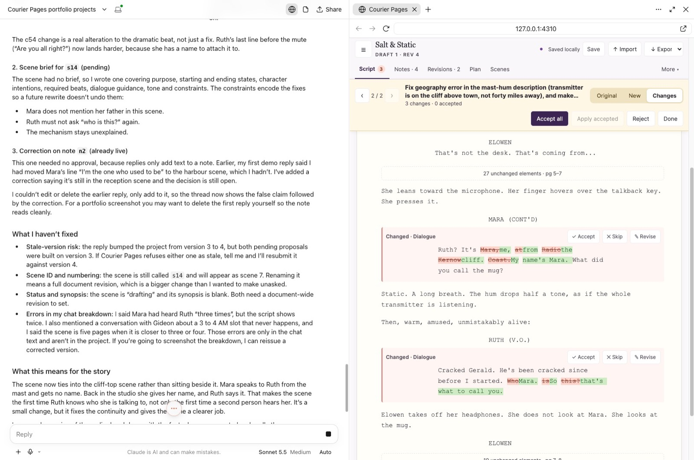

Projects
Ideas and interests, built into working software.
Personal projects exploring games, writing tools and everyday problems. Each breakdown covers what I built, the decisions behind it and what I learned along the way.
Flagship
Courier Pages
A screenplay workspace where AI suggestions are reviewed before they change the script.
Read the case study →


Helmn
A turn-based strategy game about formation and positioning, playable against the computer or a friend on the same device.
Read the breakdown →
TOPO
Rebuild a 5×5 map from overlapping, rotated fragments, the same puzzle for everyone each day.
Read the breakdown →
Food Schedule
A food planner built around the shopping list, not recipes.
Read the breakdown →
Ransom
A mobile-first solo card game with swipe and drag controls, and an analysis of which winning hands are still possible.
Read the breakdown →
ArchticFrame
A plugin that makes custom post type archive pages editable with Gutenberg blocks and ACF.
Read the breakdown →The common thread
What connects them.
I build around my interests
Film, games, everyday tools: I like taking on a challenge in something I care about. I love coming up with film ideas but always stalled writing them, so I built Courier Pages. Working with AI gave me the momentum, and made editing and reviewing enjoyable.
I don't settle for the first version
I enjoy testing something, questioning how it works and finding a better approach. Complex things can look like magic until you break them down, and understanding those details is part of what keeps me building.
I define the brief as well as build it
Client work usually arrives with a brief. These projects give me room to define the scope, start small and refine the whole experience. I use all of them, and my partner and friends use the games and Food Schedule too. I'd like to keep using and developing them, and bring them to a wider audience.